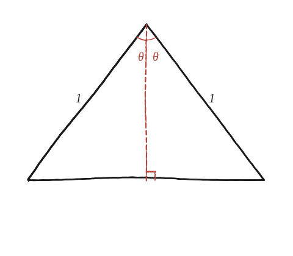

Com es relacionen el sinus i el cosinus d'un angle amb el sinus i el cosinus d'un angle del doble de mida?
Què hem de produir
Dues fórmules: sin(2θ) i cos(2θ) escrits només amb sin θ i cos θ. Com que el sinus i el cosinus de la Qüestió 78 són raons d'un triangle rectangle, de moment només tenen sentit per a angles aguts; perquè 2θ també ho sigui, es treballa amb θ < 45°. Al final es veurà per què aquesta condició no és un tecnicisme i què passa quan es deixa enrere.
Un triangle que conté els dos angles alhora
Es construeix un triangle isòsceles amb els dos costats iguals de longitud 1 i l'angle 2θ entre ells, al vèrtex de dalt. Es deixa caure l'alçada des d'aquest vèrtex fins a la base. Els dos triangles que en surten són rectangles, tenen la mateixa hipotenusa (1) i comparteixen l'alçada; per Pitàgores, el tercer costat també els coincideix, o sigui que són congruents. Per tant l'alçada parteix l'angle 2θ en dos angles de θ i la base en dues meitats iguals. En cadascun dels dos triangles rectangles, amb hipotenusa 1 i angle θ a dalt: la meitat de la base és el catet oposat a θ, i val sin θ; l'alçada és el catet contigu, i val cos θ.

L'àrea, de dues maneres
(a) Amb la fórmula de la Qüestió 80, meitat del producte de dos costats pel sinus de l'angle que formen: àrea = ½·1·1·sin(2θ) = ½·sin(2θ). (b) Amb la base i l'alçada del pas anterior: la base sencera fa 2·sin θ i l'alçada cos θ, i l'àrea = ½·2·sin θ·cos θ = sin θ·cos θ. Les dues comptes fan servir alçades diferents: la fórmula de (a) prové de l'alçada traçada des d'un vèrtex de la base fins al costat oposat, que val sin(2θ); la de (b) és l'alçada des del vèrtex de dalt. Si fossin la mateixa alçada, igualar les dues àrees no diria res de nou. Com que no ho són, igualar-les dona sin(2θ) = 2·sin θ·cos θ.
El cosinus, sense cap teorema nou
La temptació és anar al teorema del cosinus, però encara no el tens en la forma que caldria: la Qüestió 79 només en demostra el cas de l'angle obtús, i aquí 2θ és agut. N'hi ha prou amb la Qüestió 84, sin² + cos² = 1, aplicada a l'angle 2θ: cos²(2θ) = 1 − sin²(2θ). Escrivint s = sin θ, i fent servir un altre cop la Qüestió 84 per canviar cos²θ per 1 − s²: sin²(2θ) = 4s²·cos²θ = 4s²(1 − s²) = 4s² − 4s⁴. Llavors cos²(2θ) = 1 − 4s² + 4s⁴, que és un quadrat perfecte: (1 − 2s²)². Queda triar l'arrel, i és aquí on es fa servir θ < 45°: cos(2θ) és positiu perquè 2θ és agut, i 1 − 2s² també ho és perquè s < sin 45°, és a dir s² < ½. Dues quantitats positives amb el mateix quadrat són iguals: cos(2θ) = 1 − 2·sin²θ.
sin(2θ) = 2·sin θ·cos θ, perquè és la mateixa àrea d'un triangle isòsceles de costats 1 i angle 2θ calculada de dues maneres. I cos(2θ) = 1 − 2·sin²θ, que surt de sin² + cos² = 1 aplicat dues vegades i d'un quadrat perfecte; canviant sin²θ per 1 − cos²θ s'escriu també cos²θ − sin²θ o 2·cos²θ − 1, que són la mateixa fórmula.
Comprovació
Amb θ = 30°, tot exacte: sin 30° = ½ i cos 30° = √3/2. Llavors 2·½·√3/2 = √3/2, que és sin 60° ✓; i 1 − 2·(½)² = ½, que és cos 60° ✓. Amb un angle sense valors coneguts, θ = 37°: sin 37° ≈ 0,602 i cos 37° ≈ 0,799, i 2·0,602·0,799 ≈ 0,961, mentre que sin 74° ≈ 0,961 ✓; 1 − 2·0,602² ≈ 1 − 0,724 = 0,276, i cos 74° ≈ 0,276 ✓.
I després
La condició θ < 45° no era un tecnicisme: és la que ha permès triar l'arrel positiva. Si 2θ passa de 90°, les dues fórmules continuen valent, però abans cal decidir què vol dir el cosinus d'un angle obtús —la mateixa feina que la Qüestió 87 fa amb el sinus—, i la resposta és la seva germana amb el signe canviat: cos(C) := −cos(180° − C). Amb θ = 60°: 1 − 2·sin²60° = 1 − 2·¾ = −½, i cos 120° = −cos 60° = −½ ✓. I el sinus, amb la definició de la Qüestió 87: sin 120° = sin 60° ≈ 0,866, i 2·sin 60°·cos 60° ≈ 2·0,866·0,5 = 0,866 ✓.